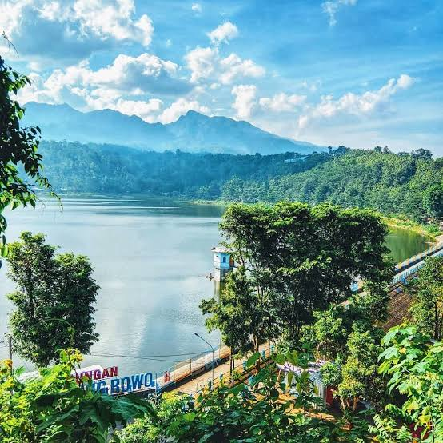
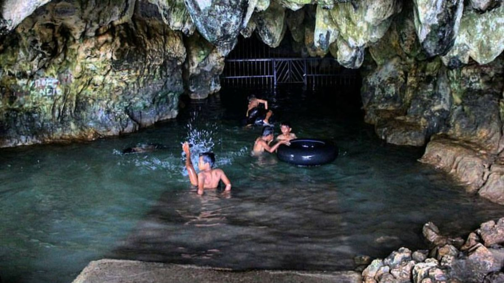
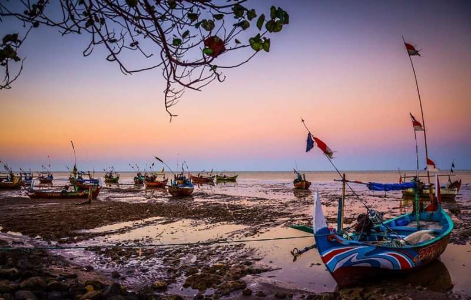
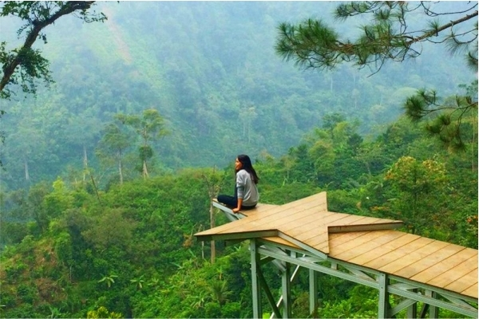
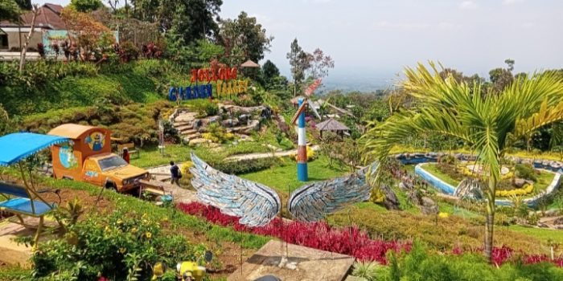
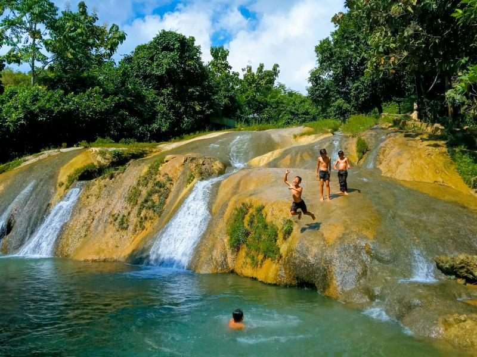
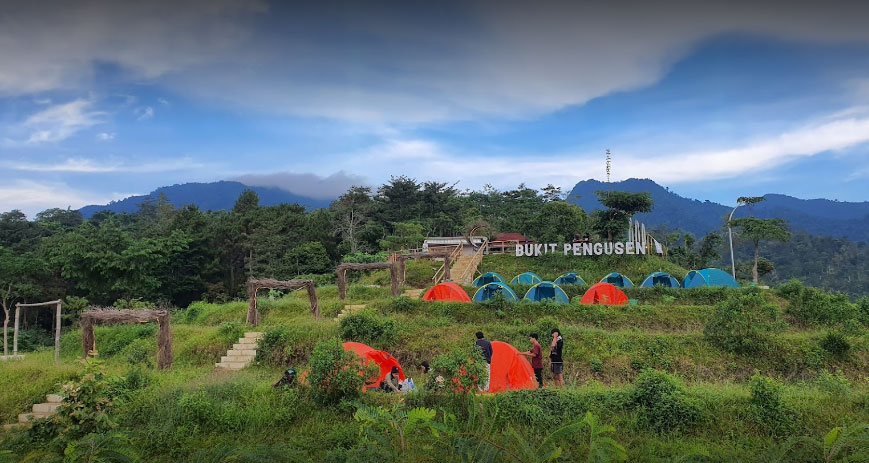

Dari keindahan alam hingga destinasi menarik, ada banyak cerita dan tempat yang bisa kamu temukan saat menjelajahi Pati.
Mulai Menjelajah →KENALI LEBIH DEKAT
Kabupaten Pati memiliki beragam destinasi menarik, mulai dari wisata alam, kawasan pantai, hingga agrowisata. Setiap tempat memiliki daya tarik tersendiri yang layak untuk dikenal.
Menikmati keindahan dan kesejukan alam.
Mengenal pesona kawasan pesisir Pati.
Menjelajahi wisata dengan nuansa alam.
DESTINASI PILIHAN
Temukan destinasi yang ingin kamu jelajahi.

📍 Kabupaten Pati
Tempat wisata dengan suasana alam dan pemandangan waduk yang menarik.
Lihat Detail →
📍 Kayen, Pati
Destinasi wisata alam yang menawarkan pengalaman menjelajahi kawasan gua.
Lihat Detail →
📍 Dukuhseti, Pati
Salah satu destinasi pesisir yang bisa menjadi pilihan untuk menikmati suasana pantai.
Lihat Detail →
📍 Tlogowungu, Pati
Kawasan wisata alam dengan suasana pepohonan pinus yang sejuk.
Lihat Detail →
📍 Kabupaten Pati
Destinasi wisata bernuansa alam yang menawarkan pengalaman menikmati suasana agrowisata.
Lihat Detail →
📍 Kayen, Pati
Destinasi wisata alam berupa air terjun yang menawarkan suasana alami dan menyegarkan.
Lihat Detail →
📍 Gunungwungkal, Pati
Destinasi wisata perbukitan yang menawarkan pemandangan alam dan suasana yang sejuk.
Lihat Detail →